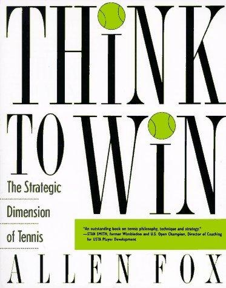

Tư Duy Để Chiến Thắng
Chiều kích chiến thuật của quần vợt
Bản dịch Việt ngữ này chỉ dùng cho mục đích học tập cá nhân, phi thương mại. Bản quyền tác phẩm gốc thuộc về tác giả và nhà xuất bản.
Người chơi dưới năng lực của mình
Nếu bạn từng thua một trận mà trong lòng biết mình có thể thắng, cuốn sách này được viết cho bạn.
Allen Fox mở đầu bằng một quan sát khó chịu: phần lớn người chơi quần vợt thi đấu dưới năng lực thật của mình. Không phải dưới một chút. Dưới rất xa. Họ có cú thuận tay, có cú giao bóng, có thể đánh ba mươi quả bóng liên tiếp trong buổi tập. Rồi bước vào trận và thua một người mà ở buổi tập họ sẽ thắng.
Ông không giải thích hiện tượng đó bằng tâm lý. Ông giải thích nó bằng một lỗ hổng trong cách người ta được dạy.
Người ta dạy cách đánh bóng, không dạy cách chơi trận
Một buổi học quần vợt điển hình trông như thế này: huấn luyện viên đứng bên lưới, tung bóng, người học đánh. Lặp lại bốn mươi lần. Sửa cổ tay. Lặp lại bốn mươi lần nữa. Sửa vai.
Toàn bộ buổi học dành cho việc sản xuất cú đánh. Không có phần nào dành cho câu hỏi: đánh vào đâu, đứng ở đâu, bỏ bao nhiêu điểm và giành bao nhiêu điểm. Những câu hỏi đó chỉ xuất hiện khi bạn bước vào một trận đấu thật — và lúc đó không còn ai sửa được gì.
Kết quả là một người chơi có kỹ thuật của một tay vợt khá và chiến thuật của một người mới. Khi gặp một đối thủ có kỹ thuật kém hơn nhưng biết chọn điểm rơi, người đó thua — và không hiểu vì sao, vì mọi thứ trông vẫn đúng.
Phần cứng và phần mềm
Fox dùng một phép so sánh đơn giản nhưng rất bền: lối chơi của bạn là một hệ thống máy tính.
Các cú đánh là phần cứng. Cú thuận tay, cú trái tay, giao bóng, vô-lê, lốp bóng — mỗi thứ là một bộ phận với thông số riêng: tốc độ tối đa, độ chính xác, độ ổn định dưới áp lực. Phần cứng có thể nâng cấp bằng cách tập, và nó là thứ mà mọi người tập.
Chiến thuật là phần mềm. Nó quyết định khi nào dùng bộ phận nào, nhắm vào đâu, và chấp nhận đánh đổi gì. Phần mềm không nằm trong tay bạn — nó nằm trong cách bạn đọc tình huống.
Một người mua dàn máy đắt tiền mà không cài phần mềm thì có một cục kim loại. Một người có cú đánh đẹp mà không có chiến thuật thì có một cục kỹ thuật. Cả hai đều không làm được việc.
Điểm mấu chốt của phép so sánh này không phải là "chiến thuật quan trọng hơn kỹ thuật". Nó là: hai thứ đó nằm ở hai tầng khác nhau, và nâng cấp tầng này không nâng cấp tầng kia. Bạn có thể tập cú thuận tay thêm mười nghìn quả và không tiến thêm một bước nào về chiến thuật.
Chiến thuật, nói cụ thể, là gì
"Chiến thuật" là một từ dễ bị làm cho trừu tượng. Trong cuốn sách này nó có nghĩa rất hẹp và rất cụ thể. Nó là bốn loại quyết định:
- Đánh vào đâu. Chéo sân hay dọc dây, sâu hay ngắn, vào góc nào, với độ xoáy nào.
- Đứng ở đâu. Sau khi đánh xong, bạn thu hồi về vị trí nào — và vị trí đó không phải giữa sân.
- Chấp nhận gì. Bạn chấp nhận bỏ một hướng để khóa chặt hướng còn lại. Không có vị trí nào che được toàn bộ sân.
- Đổi gì. Khi nào đổi nhịp, đổi độ sâu, đổi hướng — và khi nào tuyệt đối không đổi.
Bốn loại quyết định này xuất hiện ở mọi điểm bóng. Chúng không cần cú đánh mới. Chúng chỉ cần bạn biết mình đang chọn gì.
Vì sao phần mềm lại khó học hơn phần cứng
Có một lý do cấu trúc: phần cứng có phản hồi ngay. Bạn đánh bóng, bóng vào lưới, bạn biết mình sai. Phần mềm không có phản hồi ngay. Bạn chọn sai vị trí thu hồi, bóng vẫn vào sân, bạn vẫn thắng điểm đó — và bạn học được một bài học sai.
Đây là lý do rất nhiều người chơi đã chơi hai mươi năm với chiến thuật của một người chơi hai năm. Sai lầm chiến thuật hiếm khi bị trừng phạt ngay, nên nó không bao giờ bị sửa.
Cuốn sách này tồn tại để bù vào chỗ đó. Nó không dạy bạn cú đánh. Nó dạy bạn nhìn thấy những quyết định mà bạn đang đưa ra mà không biết.
Ba thứ bạn sẽ không tìm thấy ở đây
Không có hệ thống thần kỳ. Không có "chơi theo một kiểu này là thắng". Fox không tin vào điều đó, và một cuốn sách trung thực về chiến thuật thì không thể bán nó.
Không có lời khuyên tâm lý chung chung. Phần tâm lý chỉ xuất hiện ở chương cuối, và ở đó nó gắn với một hiện tượng cụ thể — hiện tượng cứng đờ trong những điểm quan trọng.
Không có gì phụ thuộc vào việc bạn đánh hay đến đâu. Mọi nguyên tắc trong sách này đúng ở mọi trình độ, vì chúng dựa trên hình học sân và vật lý bóng, không dựa trên tốc độ vung vợt. Một người mới và một tay vô địch đứng cùng một chỗ trên đường phân giác.
Đọc thế nào
Bốn phần của cuốn sách đi theo bốn câu hỏi.
Phần Một: khi bóng qua lại từ vạch cuối sân, hình học nói gì? Đây là phần nền tảng, và nếu bạn chỉ đọc một phần, hãy đọc phần này.
Phần Hai: cái gì kiểm soát không gian và thời gian? Độ sâu, độ xoáy, và cơ chế tạo lực.
Phần Ba: khi bạn tiến lên lưới, mọi quy tắc đảo ngược. Phần này giải thích tại sao và đảo ngược ở đâu.
Phần Bốn: trận đấu cụ thể — trả giao bóng mạnh, đối thủ phòng thủ, gió, và những điểm mà tay bạn bắt đầu run.
Cuối mỗi chương là một nguyên tắc có thể dùng ngay ở trận tới. Đừng cố dùng cả mười bốn. Chọn một.
Một thế kỷ đổi chiến thuật
Có một điều kỳ lạ ở quần vợt: sân không đổi. Chiều dài, chiều rộng, chiều cao lưới, vị trí vạch giao bóng — tất cả đã cố định hơn một trăm năm. Nhưng cách người ta chơi trên đó thì thay đổi liên tục, đến mức hai tay vợt cách nhau bốn mươi năm trông như chơi hai môn khác nhau.
Lịch sử đó đáng học, vì nó cho thấy cái gì là bất biến và cái gì chỉ là thời trang. Hình học là bất biến. Mọi thứ khác thì không.
Trước Thế chiến thứ hai: mọi thứ bắt đầu từ vạch cuối sân
Quần vợt thời kỳ đầu là một môn của sự kiên nhẫn. Vợt gỗ nặng, mặt vợt nhỏ, dây bằng ruột mèo — không có cách nào tạo ra tốc độ đủ lớn để kết thúc điểm nhanh. Vì thế người ta đánh bền.
Bill Tilden thống trị thập niên 1920 bằng một lối chơi đặt nền trên đường cuối sân: đánh bóng sâu, kiên nhẫn, chờ đối thủ mắc lỗi trước. Bốn tay vợt Pháp — Lacoste, Cochet, Borotra, Brugnon — tiếp nối trong thập niên 1930 với kỹ thuật cắt bóng và thay đổi nhịp. Fred Perry kết thúc kỷ nguyên đó bằng một cú thuận tay mạnh hơn hẳn chuẩn mực thời ấy.
Đặc điểm chung: người ta chỉ lên lưới khi đã dồn đối thủ vào thế bí. Lưới là phần thưởng của sự kiên nhẫn, không phải điểm xuất phát.
Kramer và cuộc đảo chính
Rồi Jack Kramer xuất hiện vào cuối thập niên 1940, và ông làm một việc mà thời đó bị coi là liều lĩnh: lên lưới sau mọi quả giao bóng, và sau mọi quả bóng ngắn.
Kramer không phát minh ra lối đánh giao bóng lên lưới. Ông là người chứng minh nó hiệu quả ở cấp độ thống trị, với một cú giao bóng đủ mạnh để biến cú trả giao bóng của đối thủ thành một quả bóng yếu. Từ đó, toàn bộ logic của môn thể thao đổi chiều: nếu bạn có thể kết thúc điểm trong ba quả bóng, kiên nhẫn trở thành một sự lựa chọn tồi.
Kramer còn để lại một thứ quan trọng hơn cả lối chơi: ông đặt tên cho ý tưởng rằng mỗi cú đánh có một xác suất thành công khác nhau, và người chơi giỏi là người chọn cú đánh có xác suất cao trong phần lớn tình huống. Cách nói đó — quần vợt xác suất cao — là nền tảng của mọi thứ trong cuốn sách này.
Ý tưởng cốt lõi rất đơn giản: bạn không cần đánh cú hay nhất. Bạn cần đánh cú có khả năng vào sân cao nhất, trong đúng tình huống. Một cú đánh tầm thường vào đúng chỗ thắng một cú đánh đẹp vào sai chỗ.
Laver và độ xoáy
Thập niên 1960, Rod Laver thêm một biến số: độ xoáy. Ông đánh xoáy lên nặng ở cả hai bên, thứ mà gần như không ai làm trước đó. Hiệu quả rất cụ thể: bóng bay qua lưới cao hơn nhiều mà vẫn rơi vào sân, vì độ xoáy kéo nó xuống.
Đây là lần đầu tiên trong lịch sử môn này, người ta có thể vừa đánh mạnh vừa an toàn. Trước Laver, mạnh và an toàn là hai lựa chọn loại trừ nhau. Sau Laver, chúng trở thành hai tham số có thể điều chỉnh cùng lúc.
Hệ quả chiến thuật: người bắt lưới không còn được hưởng lợi từ những quả bóng ngang tầm vợt nữa. Bóng xoáy nặng rơi xuống chân họ, và cú vô-lê thấp là cú vô-lê khó nhất.
Kỷ nguyên vợt graphite và sự trở lại của đường cuối sân
Từ đầu thập niên 1980, vợt graphite làm mặt vợt rộng hơn, nhẹ hơn, và đàn hồi hơn. Ba thay đổi đó cộng lại đủ để đảo ngược lại thế cân bằng mà Kramer đã thiết lập.
Björn Borg chứng minh rằng bóng xoáy lên từ vạch cuối sân có thể đánh bại lối lên lưới. Ivan Lendl đẩy tốc độ bóng từ cuối sân lên mức mà một cú vô-lê không còn đủ thời gian. Rồi đến thập niên 1990, Pete Sampras và Andre Agassi chia đôi môn thể thao thành hai cực: giao bóng không thể trả, và trả giao bóng không thể giao.
Nhưng điều đáng chú ý là: trong suốt bốn mươi năm đó, các nguyên tắc hình học không hề thay đổi. Đường chéo sân vẫn dài hơn đường dọc dây đúng chừng ấy. Lưới vẫn thấp hơn ở giữa. Đường phân giác vẫn là chỗ đứng đúng. Chỉ có tốc độ thay đổi, và tốc độ thay đổi thì làm cho những nguyên tắc đó quan trọng hơn, không kém đi.
Gilbert và sự thừa nhận của trí tuệ
Cuối thập niên 1980, Brad Gilbert — một tay vợt không có cú đánh nào thuộc loại hay nhất thế giới — lọt vào top năm. Ông làm điều đó bằng cách đọc trận đấu: tìm điểm yếu, che điểm yếu của mình, làm chậm nhịp khi cần, tăng nhịp khi cần, và chấp nhận thắng xấu.
Trước Gilbert, "thắng xấu" là một câu châm biếm. Sau Gilbert, nó là một trường phái. Và đó là lúc môn thể thao này thừa nhận một cách công khai rằng chiến thuật là một kỹ năng riêng, có thể học, có thể luyện, và không phụ thuộc vào việc bạn có cú thuận tay đẹp hay không.
Vậy cái gì bất biến
Ba thứ không đổi, và mọi thứ trong cuốn sách này dựa trên chúng:
Kích thước sân. Không ai định đổi chiều dài sân hay chiều rộng. Mọi tính toán về góc, khoảng cách, và thời gian bay đều xuất phát từ những con số cố định.
Chiều cao lưới. Lưới thấp ở giữa và cao ở hai cột. Đó là một bất đối xứng vật lý, và mọi chiến thuật đánh chéo sân đều khai thác nó.
Giới hạn thời gian phản ứng của con người. Bóng nhanh đến đâu thì người ta vẫn cần khoảng một phần tư giây để nhận ra hướng bóng và bắt đầu di chuyển. Mọi chiến thuật về độ sâu và góc đều khai thác giới hạn đó.
Ba thứ này giải thích vì sao một cuốn sách viết từ thập niên 1990 vẫn đúng. Không phải vì môn thể thao không đổi. Vì nền hình học của nó không đổi.
Bài học thực dụng
Khi xem một tay vợt giỏi chơi, đừng chỉ nhìn cú đánh. Hãy nhìn hai thứ khác: họ đứng ở đâu sau khi đánh, và họ chọn hướng nào trong tình huống nào.
Đó là hai thứ duy nhất trong toàn bộ môn thể thao này mà bạn có thể sao chép ngay lập tức, không cần tập. Cú thuận tay của họ mất mười năm. Vị trí thu hồi của họ mất một buổi để hiểu.
Vì sao đánh chéo sân
Đây là chương quan trọng nhất của cuốn sách. Nếu bạn chỉ mang được một nguyên tắc ra sân, hãy mang nguyên tắc này: khi đang giằng co từ vạch cuối sân và không biết đánh đi đâu, hãy đánh chéo sân.
Người chơi nghiệp dư biết câu đó. Hầu hết không biết vì sao nó đúng, nên họ bỏ nó ngay khi có cảm giác "quả này ăn được". Ba lý do dưới đây là ba lý do vật lý, không phải ba lời khuyên.
Lý do thứ nhất: lưới thấp hơn ở giữa
Lưới tennis không phẳng. Nó căng giữa hai cột cao 1,07 mét, và vì thế nó võng xuống còn khoảng 91,4 centimet ở chính giữa. Chênh lệch gần mười sáu centimet.
Mười sáu centimet không nghe nhiều. Nhưng hãy so với biên an toàn thực tế của một cú đánh: phần lớn người chơi đánh bóng qua lưới với khoảng cách an toàn từ ba mươi đến sáu mươi centimet. Thêm mười sáu centimet vào con số đó là tăng biên an toàn lên khoảng một phần ba.
Và có một hệ quả thứ hai mà ít người nghĩ tới: nếu biên an toàn của bạn tăng, bạn có thể đánh với quỹ đạo phẳng hơn. Quỹ đạo phẳng hơn nghĩa là bóng đi nhanh hơn với cùng một lực vung. Vậy là cú đánh chéo sân vừa an toàn hơn vừa nhanh hơn — một sự kết hợp hiếm.
Lý do thứ hai: đường chéo dài hơn đường dọc dây
Sân đơn rộng 8,23 mét và dài 23,77 mét. Đường chéo nối hai góc đối diện là cạnh huyền của một tam giác vuông có hai cạnh góc vuông là hai con số đó:
√(23,77² + 8,23²) = 25,15 mét.
So với 23,77 mét dọc dây, đường chéo dài hơn 1,38 mét — khoảng sáu phần trăm.
Sáu phần trăm nghe nhỏ. Nhưng hãy nhìn vào loại lỗi phổ biến nhất của người chơi nghiệp dư: bóng dài ra ngoài vạch cuối sân. Khi bạn đánh dọc dây với một lực hơi quá, bóng vượt vạch cuối sân và bạn mất điểm. Cùng lực đó, đánh chéo sân, quả bóng phải đi thêm 1,38 mét mới tới vạch — và trong phần lớn trường hợp, nó rơi vào trong.
Nói cách khác: đánh chéo sân không làm bạn chính xác hơn. Nó làm cho cùng một sai số trở nên ít tốn kém hơn. Đó là toàn bộ ý nghĩa của cụm từ "xác suất cao".
Lý do thứ ba: bạn thu hồi về một vị trí tốt hơn
Đây là lý do bị bỏ qua nhiều nhất, và nó là lý do quan trọng nhất về mặt chiến thuật.
Khi bạn đánh chéo sân, quả bóng đi vào một góc của đối thủ. Đối thủ, để trả được, phải đánh từ góc đó. Và khi họ đánh từ góc, góc mở mà họ tạo ra có đường phân giác hướng về phía gần giữa sân của bạn.
Hãy hình dung ngược lại: bạn đánh dọc dây. Bóng đi vào góc đối diện theo chiều ngang, đối thủ đánh trả và có toàn bộ chiều rộng sân để mở góc. Bạn phải chạy ngang gần như toàn bộ sân.
Đó là khác biệt cốt lõi: cú đánh chéo sân không chỉ an toàn hơn, nó còn đặt bạn vào vị trí mà cú đánh trả của đối thủ không thể làm bạn phải chạy xa. Bạn vừa tấn công vừa phòng ngự bằng cùng một cú đánh.
Bảng số liệu
Các con số dưới đây là kích thước chuẩn của một sân tennis. Chúng không đổi ở bất kỳ giải đấu nào, và mọi tính toán trong cuốn sách này đều dựa trên chúng.
| Đại lượng | Giá trị |
|---|---|
| Chiều dài sân (vạch cuối này sang vạch cuối kia) | 23,77 m |
| Chiều rộng sân đơn | 8,23 m |
| Chiều rộng sân đôi | 10,97 m |
| Đường chéo sân đơn (góc này sang góc đối diện) | 25,15 m |
| Đường chéo sân đôi | 26,18 m |
| Chênh lệch đường chéo so với dọc dây (sân đơn) | +1,38 m |
| Chiều cao lưới ở hai cột | 1,07 m |
| Chiều cao lưới ở chính giữa | 0,914 m |
| Chênh lệch chiều cao lưới giữa cột và tâm | 15,6 cm |
| Chiều sâu ô giao bóng (từ lưới đến vạch giao bóng) | 6,40 m |
| Góc của đường chéo sân đơn so với đường biên dọc | 19,1° |
Nhưng không phải lúc nào cũng chéo sân
Cần nói rõ để tránh một hiểu nhầm rất phổ biến. "Đánh chéo sân" là nguyên tắc cho tình huống giằng co, khi bạn không có lợi thế. Nó không phải nguyên tắc cho mọi cú đánh.
Ba ngoại lệ:
Khi bạn có bóng ngắn và đang ở trong sân. Lúc đó bạn đang tấn công, và mục tiêu không còn là giảm rủi ro mà là kết thúc điểm. Đánh dọc dây từ trong sân là cú đánh đúng, vì nó rút ngắn thời gian đối thủ phản ứng.
Khi đối thủ đã bị kéo ra ngoài biên. Sân đối diện đang trống. Đánh chéo sân lúc này là đánh vào chỗ đối thủ đang đứng.
Khi bạn đang ở trên lưới. Toàn bộ logic đảo ngược, và đó là nội dung của chương tám.
Nguyên tắc đầy đủ phải là: khi không có lợi thế, chọn hướng có xác suất cao nhất; khi có lợi thế, chọn hướng kết thúc điểm. Nhầm lẫn giữa hai tình huống đó là lỗi chiến thuật phổ biến nhất của người chơi trình độ trung bình — họ đánh cú kết thúc khi không có lợi thế, và đánh cú an toàn khi đang có cơ hội.
Bài tập nhận diện
Trong trận tới, hãy đếm. Mỗi khi bạn ở thế giằng co và đánh dọc dây, đánh dấu một lần. Cuối trận, xem bạn có bao nhiêu dấu và bao nhiêu trong số đó là bóng hỏng.
Phần lớn người chơi phát hiện ra hai điều: họ đánh dọc dây nhiều hơn họ tưởng, và tỉ lệ hỏng ở những quả đó cao hơn hẳn mức trung bình của họ. Không cần thay đổi gì trong trận đó. Chỉ cần biết.
Đường phân giác phòng ngự
Sau khi đánh bóng, bạn đi về đâu? Hầu hết người chơi trả lời: về giữa sân. Câu trả lời đó sai, và nó sai một cách có hệ thống — nghĩa là nó sai theo cùng một kiểu ở mọi điểm bóng, cả trận, cả đời.
Vì sao giữa vạch cuối sân không phải là vị trí đúng
Điểm giữa vạch cuối sân chỉ là vị trí đúng trong đúng một trường hợp: khi quả bóng của bạn vừa rơi vào chính giữa sân đối phương. Lúc đó đối thủ có hai hướng mở đối xứng, và đường chia đôi góc của họ đúng là tâm.
Nhưng bạn hiếm khi đánh vào giữa sân. Bạn đánh vào một góc. Và khi bóng ở một góc, đối thủ không còn hai hướng đối xứng nữa — họ có một hướng ngắn và một hướng dài, và đường chia đôi góc của họ bị lệch.
Nếu bạn đứng ở tâm trong khi đường chia đôi đó lệch, bạn đang đứng cách vị trí tối ưu một khoảng — thường từ một đến hai mét. Trong một môn thể thao mà thời gian bay của bóng từ đối thủ sang bạn thường dưới hai giây, một mét rưỡi là gần nửa giây chạy. Đó là toàn bộ khác biệt giữa đánh bóng thoải mái và đánh bóng trong thế bị động.
Cách xác định vị trí đúng
Nguyên tắc phân giác phát biểu như sau: vị trí thu hồi đúng của bạn nằm trên đường chia đôi góc rộng nhất mà đối thủ có thể tạo ra, tính từ điểm họ chạm bóng.
Cách dựng, bằng ba bước:
- Xác định điểm đối thủ chạm bóng.
- Từ điểm đó, vẽ hai đường đến hai mục tiêu cực đoan nhất của họ — thường là hai góc sân của bạn. Hai đường này tạo thành một góc.
- Vẽ đường chia đôi góc đó. Đứng trên đường này.
Ví dụ cụ thể. Bạn đánh bóng chéo sân sâu vào góc phải của đối thủ. Đối thủ đứng ở góc phải của họ. Hai mục tiêu cực đoan của họ là: góc trái của bạn (đường dọc dây) và góc phải của bạn (đường chéo sân). Góc giữa hai đường đó có đường chia đôi lệch về phía bên phải sân của bạn.
Vậy bạn phải đứng lệch về bên phải, không phải ở giữa. Không phải một chút — thường là một đến hai mét.
Điều đáng ngạc nhiên: bạn đứng gần hướng nguy hiểm hơn
Phản xạ tự nhiên là đứng giữa để "che đều hai bên". Nguyên tắc phân giác nói ngược lại: hãy đứng gần hướng mà đối thủ có thể làm bạn đau nhất.
Lý do là sự bất đối xứng về thời gian. Cú đánh dọc dây của đối thủ đi quãng đường ngắn hơn và đến bạn nhanh hơn. Cú đánh chéo sân đi quãng đường dài hơn, qua phần lưới thấp hơn, và đến bạn chậm hơn. Vì thế bạn có thể đứng lệch về phía dọc dây và vẫn kịp với cú chéo sân.
Nếu bạn đứng giữa, bạn đối xử với hai hướng như nhau — và bạn sẽ luôn trễ với hướng nhanh hơn.
Khoảng cách tới vạch cuối sân
Đường phân giác cho bạn biết đứng ở đâu theo chiều ngang. Còn chiều dọc thì sao?
Nguyên tắc: càng đánh sâu và càng có nhiều thời gian, bạn càng đứng gần vạch cuối sân — thậm chí bên trong. Càng bị đẩy ra ngoài hoặc đánh bóng ngắn, bạn càng đứng lùi.
Lý do: khoảng cách tới vạch cuối sân là một sự đánh đổi giữa hai rủi ro. Đứng gần vạch, bạn lấy được bóng sớm hơn và có nhiều góc hơn, nhưng bóng qua đầu bạn sẽ thành lốp bóng thắng điểm. Đứng lùi, bạn chặn được lốp bóng nhưng phải chạy nhiều hơn cho mọi cú đánh khác.
Với hầu hết người chơi nghiệp dư, vị trí đúng là khoảng nửa mét đến một mét sau vạch cuối sân trong pha giằng co bình thường, và tiến vào trong sân khi bóng của bạn thật sự sâu.
Một sai lầm liên quan: thu hồi quá sớm
Có một lỗi tinh vi hơn lỗi đứng sai chỗ: thu hồi quá sớm.
Sau khi đánh bóng, nhiều người chơi lập tức chạy về vị trí thu hồi — trong khi bóng vẫn đang bay sang bên đối thủ. Kết quả là họ đứng yên ở vị trí đó và quan sát, thay vì tiếp tục di chuyển theo bóng.
Thứ tự đúng: đánh bóng, thu hồi về đường phân giác, rồi điều chỉnh theo hướng bóng đang bay. Bước cuối đó là bước bị bỏ qua nhiều nhất. Vị trí phân giác là điểm xuất phát, không phải điểm đến.
Bài tập không cần ai giúp
Trong buổi tập tới, đặt một chiếc khăn hoặc một chai nước ở vị trí bạn thường thu hồi về. Đánh mười quả bóng chéo sân, và sau mỗi quả, tự hỏi: nếu phải dựng đường phân giác cho tình huống này, nó ở đâu?
Sau mười quả, bạn sẽ thấy mình đã đứng sai khoảng tám lần. Không cần sửa ngay. Chỉ cần bắt đầu nhìn thấy nó — vì một khi đã nhìn thấy, bạn sẽ không còn đứng ở tâm một cách vô thức được nữa.
Vì sao nguyên tắc này đúng ở mọi trình độ
Bạn có thể nghĩ rằng nguyên tắc phân giác chỉ dành cho người chơi giỏi, vì nó đòi hỏi đọc được hướng bóng của đối thủ. Không đúng.
Người chơi mới không cần dựng chính xác đường phân giác. Họ chỉ cần biết một điều: sau khi đánh bóng vào một góc, đừng chạy về giữa sân. Hãy chạy về phía góc mà bạn vừa đánh vào, lệch khoảng một mét.
Đó là phiên bản đơn giản của cùng một nguyên tắc, và nó đã đủ để cải thiện vị trí của phần lớn người chơi nghiệp dư trong một buổi.
Chiều sâu: vũ khí bị đánh giá thấp
Có một câu hỏi mà mọi người chơi nghiệp dư đều trả lời sai: giữa một quả bóng rất mạnh nhưng rơi ở giữa sân, và một quả bóng tốc độ trung bình nhưng rơi sát vạch cuối sân, quả nào khó chịu hơn?
Trực giác nói quả mạnh. Kinh nghiệm nói quả sâu. Và kinh nghiệm đúng — không phải vì cảm giác, mà vì số học.
Chiều sâu làm thay đổi ba thứ cùng lúc
Khi bóng của bạn rơi trong khoảng một mét tính từ vạch cuối sân, ba hệ quả xảy ra đồng thời với đối thủ.
Thứ nhất: họ phải lùi. Không phải vì họ muốn, mà vì bóng sẽ nảy ở phía sau họ nếu họ không lùi. Một quả bóng rơi ở vạch giao bóng buộc đối thủ đứng cách lưới khoảng 6,4 mét. Một quả bóng rơi ở vạch cuối sân buộc họ đứng cách lưới gần 12 mét. Chênh lệch: hơn 5 mét.
Thứ hai: thời gian bay tăng. Năm mét rưỡi thêm vào quãng đường bóng phải đi, ở tốc độ trung bình của một cú đánh giằng co, tương đương khoảng một phần tư giây. Một phần tư giây nghe nhỏ, nhưng đó chính là khoảng thời gian bạn cần để thu hồi về vị trí phân giác và ổn định lại tư thế. Chiều sâu của bạn mua thời gian cho bạn.
Thứ ba: góc của họ bị bóp lại. Đây là hệ quả quan trọng nhất và ít được hiểu nhất. Khi đối thủ đứng sát vạch cuối sân, hai góc sân của bạn mở ra trước mặt họ một góc rộng. Khi họ phải lùi ra sau vạch hai hoặc ba mét, cùng hai góc đó co lại thành một góc hẹp hơn nhiều, và mọi cú đánh của họ trở nên dễ đoán.
Vì sao điều này quan trọng hơn tốc độ
Một quả bóng nhanh nhưng ngắn có một nhược điểm chí mạng: nó đến nhanh nhưng nó đến gần. Đối thủ không phải di chuyển nhiều, không phải lùi, và có đầy đủ góc để trả bóng. Bạn đã bỏ ra nhiều năng lượng hơn và nhận lại ít lợi thế hơn.
Ngược lại, một quả bóng sâu ở tốc độ vừa phải buộc đối thủ phải làm việc: lùi, chờ bóng, đánh từ vị trí yếu. Bạn tiêu ít năng lượng hơn và nhận lại nhiều hơn.
Đó là lý do các tay vợt nghiệp dư chơi tốt nhất thường không phải những người đánh mạnh nhất. Họ là những người đánh sâu nhất một cách đều đặn nhất.
Cách đo chiều sâu của chính bạn
Bạn không cần máy đo. Có một phép thử đơn giản: trong một buổi tập, đặt một chiếc khăn hoặc một hàng bóng ở vị trí cách vạch cuối sân khoảng hai mét, phía bên kia lưới. Đánh ba mươi quả bóng bình thường và đếm xem bao nhiêu quả rơi ra sau hàng đó.
Phần lớn người chơi nghiệp dư đếm được dưới mười. Nghĩa là bảy mươi phần trăm bóng của họ rơi vào vùng mà đối thủ có thể tấn công.
Mục tiêu thực dụng: sáu mươi phần trăm. Không phải một trăm — cố đánh sâu một trăm phần trăm sẽ dẫn đến bóng dài ra ngoài, và bóng dài là lỗi tệ hơn bóng ngắn.
Làm sao đánh sâu hơn mà không đánh mạnh hơn
Đây là chỗ hầu hết người chơi hiểu sai. Họ nghe "cần đánh sâu" và tăng lực. Kết quả là bóng đi dài ra ngoài, và họ kết luận rằng đánh sâu là rủi ro.
Ba cách tăng chiều sâu mà không tăng lực:
Một: tăng độ cao qua lưới. Một quả bóng đi cao hơn lưới ba mươi centimet sẽ rơi sâu hơn một quả đi thấp hơn, với cùng một lực. Đây là cách dễ nhất và cũng là cách bị bỏ qua nhiều nhất. Đánh bóng cao hơn nghe có vẻ "yếu", nhưng nó không yếu — nó sâu.
Hai: tăng độ xoáy lên. Xoáy lên cho phép bóng đi cao hơn mà vẫn rơi vào sân. Đây chính là phát hiện của Rod Laver ở chương trước, và nó vẫn là công cụ mạnh nhất để tăng chiều sâu an toàn.
Ba: đánh vào bóng sớm hơn. Chạm bóng sớm hơn nghĩa là bóng của đối thủ chưa rơi xuống hết, nên bạn đánh từ một độ cao lớn hơn, và bóng đi xa hơn với cùng biên độ. Đây là cách khó nhất nhưng cũng hiệu quả nhất.
Chiều sâu và sự kiên nhẫn
Có một nghịch lý thực dụng ở đây: muốn đánh sâu, bạn phải chấp nhận đánh bóng với tốc độ thấp hơn bạn có thể.
Ở trình độ trung bình, phần lớn lỗi đến từ việc cố đánh nhanh hơn khả năng kiểm soát. Nếu bạn giảm tốc độ vung khoảng mười lăm phần trăm và dồn phần tiết kiệm đó vào độ cao và độ xoáy, chiều sâu của bạn sẽ tăng và số lỗi sẽ giảm. Đó là một sự đánh đổi gần như luôn có lợi.
Thử nghiệm trong hai tuần: chơi với ý định duy nhất là đưa sáu trên mười quả bóng rơi vào mét cuối sân. Không quan tâm thắng thua. Chỉ đếm.
Phần lớn người chơi phát hiện ra họ thắng nhiều hơn trong hai tuần đó, dù cố tình đánh chậm hơn.
Một ngoại lệ: khi nào không nên đánh sâu
Chiều sâu là vũ khí của pha giằng co. Nó không phải vũ khí của pha kết thúc.
Khi bạn có bóng ngắn và đang ở trong sân, đánh sâu là đánh vào chỗ đối thủ đang đứng chờ. Lúc đó bạn cần đánh ngắn hơn và chếch ra biên — cú đánh kết thúc điểm không phải là cú đánh sâu nhất, mà là cú đánh xa nhất tính theo chiều ngang.
Nguyên tắc: chiều sâu để giành thế, chiều rộng để kết thúc.
Ba kiểu quỹ đạo
Nhìn một tay vợt chuyên nghiệp đánh bóng, bạn sẽ thấy hàng chục kiểu vung vợt khác nhau. Nhưng nếu bỏ qua phần hình thức, chỉ có ba kiểu quỹ đạo, và mỗi kiểu làm đúng một việc.
Vì sao xoáy lại làm bóng rơi xuống
Một quả bóng bay trong không khí chịu hai lực: trọng lực kéo xuống và lực cản của không khí. Khi quả bóng quay, lớp không khí sát mặt bóng bị cuốn theo, và tốc độ không khí ở hai phía quả bóng trở nên khác nhau. Phía có không khí chuyển động cùng chiều với dòng chảy tổng hợp có áp suất thấp hơn; phía ngược lại có áp suất cao hơn. Chênh lệch áp suất đẩy quả bóng về phía áp suất thấp.
Đó là hiệu ứng Magnus. Với bóng xoáy lên, phía trên quả bóng có áp suất thấp hơn, nên có một lực đẩy xuống. Quả bóng bị "ghìm" xuống nhanh hơn trọng lực một mình.
Hệ quả chiến thuật rất cụ thể: bạn có thể đánh bóng qua lưới cao hơn nhiều mà vẫn chắc chắn rơi vào sân. Đó là toàn bộ giá trị của xoáy lên — không phải để bóng nặng hơn, mà để mua biên an toàn theo chiều cao mà không phải trả bằng chiều dài.
Ba kiểu, ba nhiệm vụ
Xoáy lên — quỹ đạo vòm, an toàn, sâu. Bóng đi cao qua lưới từ sáu mươi centimet đến một mét, rồi cắm xuống. Đây là cú đánh nền tảng của quần vợt hiện đại, và lý do rất đơn giản: nó là kiểu duy nhất cho phép bạn vừa đánh mạnh vừa đánh an toàn.
Nhược điểm: bóng đi chậm hơn về mặt thời gian bay (vì đường đi dài hơn), và bóng nảy cao — điều mà một số đối thủ thích, đặc biệt là những người có cú đánh cao tay.
Phẳng — quỹ đạo thẳng, nhanh, rủi ro. Bóng đi gần như đường thẳng, qua lưới thấp, và đến rất nhanh. Biên an toàn theo chiều cao chỉ còn mười đến ba mươi centimet, nên sai số cho phép rất nhỏ.
Đây là cú đánh để kết thúc, không phải để giằng co. Cách dùng đúng: khi bạn có bóng nảy cao ngang tầm vai hoặc cao hơn, đứng trong sân, và có đủ thời gian chuẩn bị. Ba điều kiện đó cùng lúc thì cú phẳng là lựa chọn tốt nhất. Thiếu một điều kiện, nó là lựa chọn tệ nhất.
Cắt bóng — quỹ đạo thấp, trôi, đổi nhịp. Bóng xoáy ngược, bay thấp qua lưới và trôi về phía sau sau khi nảy. Nó không nhanh, nhưng nó gây ra ba vấn đề cho đối thủ: bóng nảy thấp (buộc họ phải cúi), bóng trôi (buộc họ phải đánh từ phía sau), và nhịp chậm (buộc họ phải tự tạo lực).
Cắt bóng là cú đánh phòng ngự tốt nhất trong ba kiểu, và là cú đánh thay đổi nhịp tốt nhất. Nó cũng là cú đánh bị người chơi nghiệp dư bỏ qua nhiều nhất, vì nó không tạo cảm giác mạnh.
Bảng so sánh
| Kiểu xoáy | Quỹ đạo | Độ cao qua lưới | Dùng khi |
|---|---|---|---|
| Xoáy lên (topspin) | Vòm, cắm xuống sau khi qua lưới | 0,6 – 1,0 m | Giằng co từ vạch cuối sân; cần chiều sâu; đánh vào góc |
| Phẳng | Gần thẳng | 0,1 – 0,3 m | Bóng nảy cao, đứng trong sân, có thời gian chuẩn bị, muốn kết thúc điểm |
| Cắt bóng (slice) | Thấp, trôi về sau | 0,2 – 0,5 m | Phòng ngự khi bị kéo rộng; đổi nhịp; đánh vào chân đối thủ lên lưới |
| Xoáy ngang | Cong sang bên | Tùy cú đánh | Giao bóng; kéo đối thủ ra khỏi sân theo chiều ngang |
Sai lầm phổ biến nhất: dùng cú phẳng để giằng co
Người chơi nghiệp dư thường đánh phẳng trong pha giằng co vì nó cho cảm giác "đã tay" nhất. Bóng đi nhanh, tiếng nổ to, và khi vào sân thì rất đẹp.
Vấn đề là tỉ lệ vào sân. Một cú phẳng từ vạch cuối sân, qua lưới thấp, có biên sai số theo chiều dọc rất hẹp: bóng chỉ cần dài thêm vài chục centimet là ra ngoài. Và khi bạn đánh hai mươi quả như thế trong một set, số bóng ra ngoài sẽ vượt xa số điểm bạn kiếm được từ những quả vào.
Phép thử: trong một buổi tập, đánh hai mươi quả phẳng và hai mươi quả xoáy lên từ cùng một vị trí, đếm số quả vào sân. Chênh lệch thường từ bốn đến tám quả. Đó là toàn bộ khác biệt giữa thắng và thua ở trình độ trung bình.
Vì sao cắt bóng lại khó chịu hơn nó trông
Cú cắt bóng trông như một cú đánh nhẹ. Nhưng nó tấn công vào đúng thứ mà người chơi hiện đại phụ thuộc nhiều nhất: nhịp.
Một người chơi quen với bóng xoáy lên nảy cao ngang hông sẽ gặp khó khăn thật sự với một quả bóng nảy thấp ngang đầu gối. Không phải vì họ thiếu kỹ thuật, mà vì cú đánh của họ được xây trên một độ cao bóng nhất định.
Vì vậy cắt bóng không phải là cú đánh "yếu" dùng khi bí. Nó là một công cụ chiến thuật dùng để phá nhịp — và nó hiệu quả nhất khi bạn dùng nó trong lúc đang có thế, không phải khi đang bị dồn.
Nguyên tắc chọn kiểu xoáy
Một câu duy nhất: chọn kiểu xoáy theo độ cao của bóng và vị trí của bạn, không theo cảm giác.
Bóng thấp, bạn ở xa: xoáy lên hoặc cắt bóng. Bóng cao, bạn ở trong sân: phẳng. Bóng ngang hông, bạn ở vạch cuối sân: xoáy lên, luôn luôn.
Người chơi giỏi không chọn kiểu xoáy ở giây cuối. Họ nhận ra độ cao và vị trí trước khi bóng sang, và kiểu xoáy là hệ quả tự động của hai thông tin đó.
Thế đứng và chuỗi lực
Có một niềm tin phổ biến khiến rất nhiều người chơi mắc kẹt ở trình độ trung bình: lực đến từ tay. Người tin điều đó sẽ đánh bằng vai và cẳng tay, mỏi rất nhanh, và không bao giờ hiểu tại sao một người nhỏ con hơn lại đánh bóng nặng hơn.
Lực không đến từ tay. Lực đến từ mặt đất, đi qua chân, qua hông, qua thân trên, và thoát ra ở đầu vợt. Cánh tay chỉ là đoạn cuối của một chuỗi — và nếu bạn dùng cánh tay để làm việc của cả chuỗi, bạn vừa yếu vừa dễ chấn thương.
Hai tư thế, hai triết lý
Thế đứng đóng là tư thế cổ điển: chân dẫn hướng bước chéo về phía trước theo hướng đánh, vai gần như vuông góc với lưới, trọng lượng chuyển từ chân sau sang chân trước trong lúc đánh.
Ưu điểm: lực truyền thẳng, hướng bóng dễ kiểm soát, và cơ thể tiến về phía trước — điều bạn muốn khi đang tấn công. Đây là tư thế đúng cho cú tiếp cận lưới và cho mọi cú đánh mà bạn chủ động bước vào.
Nhược điểm: sau khi đánh xong, trọng lượng đã dồn hết lên chân trước, và bạn phải mất thêm một bước để lấy lại thăng bằng rồi mới di chuyển được. Với bóng nhanh, một bước đó là quá nhiều.
Thế đứng mở là tư thế hiện đại: hai bàn chân gần như song song với lưới, không có bước chéo. Năng lượng được nạp bằng cách khuỵu gối và xoay hông ra sau, rồi giải phóng bằng một chuyển động vặn thân.
Ưu điểm: bạn có thể đánh và thu hồi trong cùng một chuyển động. Sau khi chạm bóng, trọng lượng đã ở giữa hai chân, nên bước tiếp theo có thể đi bất kỳ hướng nào. Với bóng nhanh và bóng cao, đây là tư thế duy nhất khả thi.
Nhược điểm: lực truyền ít tuyến tính hơn, hướng bóng khó kiểm soát hơn, và nếu xoay hông quá nhiều thì bóng sẽ đi chéo mà bạn không định.
Vì sao thế đứng mở trở thành chuẩn
Không phải vì nó mạnh hơn. Vì nó nhanh hơn — và trong quần vợt hiện đại, thời gian là tài nguyên khan hiếm hơn lực.
Với vợt graphite, bóng đến nhanh hơn nhiều so với thời vợt gỗ. Thời gian bạn có để chuẩn bị và thu hồi bị nén lại. Thế đứng đóng tiêu tốn một bước thừa ở cuối mỗi cú đánh; nhân với bốn mươi cú đánh trong một set, đó là bốn mươi bước thừa.
Đó là lý do các tay vợt chuyên nghiệp đánh gần như hoàn toàn bằng thế mở ở cú thuận tay, và chỉ dùng thế đóng khi họ chủ động tiến lên.
Chọn tư thế theo tình huống, không theo sở thích
Đây là điểm thực dụng nhất của chương này. Không có tư thế nào đúng cho mọi cú đánh. Có ba tình huống và ba câu trả lời.
Bị đẩy ra ngoài biên, bóng nhanh: thế mở. Bạn cần thu hồi ngay, và bạn không có thời gian để bước chéo.
Bóng ngắn trong sân, bạn chủ động tấn công: thế đóng. Bạn cần hướng bóng chính xác và bạn cần tiến về phía trước.
Bóng bình thường ở giữa sân: thế bán mở — chân trước hơi chếch, chân sau đóng vai trò trục. Đây là tư thế phổ biến nhất trong thực tế, và nó là điểm cân bằng giữa hai thái cực.
Sai lầm thường gặp: xoay quá nhiều
Khi người chơi học thế mở, họ thường nghe "xoay hông" và xoay rất nhiều. Kết quả: thân người quay đi quá xa, mặt vợt mở ra, và bóng đi chéo lên hoặc bay ra ngoài.
Nguyên tắc: xoay hông để nạp năng lượng, nhưng dừng xoay ở thời điểm chạm bóng. Sau khi chạm bóng, hông có thể tiếp tục xoay tự nhiên, nhưng không được xoay chủ động trong lúc vợt đang tiếp xúc bóng.
Cách kiểm tra: nếu sau khi đánh, ngực bạn hướng về phía bên kia sân nhiều hơn hẳn so với hướng bạn định đánh, bạn đã xoay quá.
Bài tập cảm nhận chuỗi lực
Đứng ở vạch cuối sân, không có bóng. Khuỵu gối, xoay hông ra sau, rồi đẩy chân và xoay thân về phía trước, để cánh tay cầm vợt đi theo một cách thụ động. Làm chậm, mười lần.
Điều cần cảm nhận: cánh tay không làm gì cả. Nó chỉ được mang đi. Nếu bạn thấy mình phải dùng cơ vai để đưa vợt ra trước, chuỗi lực đang bị ngắt ở đâu đó giữa hông và vai.
Sau đó đánh bóng với cùng cảm giác đó. Bóng sẽ đi chậm hơn một chút trong vài lần đầu, rồi nhanh hơn hẳn khi chuỗi đã nối.
Một ghi chú về chấn thương
Điều này không nằm trong phạm vi chiến thuật, nhưng nó liên quan trực tiếp. Đánh bằng tay là nguyên nhân phổ biến nhất của đau khuỷu và đau vai ở người chơi nghiệp dư. Không phải vì họ đánh nhiều, mà vì họ dùng một nhóm cơ nhỏ để làm việc của một chuỗi lớn.
Nếu bạn đang đau khuỷu, hãy thử một buổi đánh với ý định duy nhất là không dùng cơ cẳng tay. Bóng sẽ đi chậm. Nhưng cơn đau thường giảm ngay trong buổi đó, và đó là dấu hiệu cho biết vấn đề nằm ở chuỗi lực chứ không nằm ở vợt.
Vì sao trên lưới phải đánh dọc dây
Đây là chương mà cuốn sách này đáng giá nhất. Nó nói về một điều mà gần như mọi người chơi nghiệp dư làm sai, và làm sai một cách tự tin, vì họ vừa học được một nguyên tắc đúng ở chỗ khác.
Nguyên tắc đó là: đánh chéo sân. Ở vạch cuối sân, nó đúng. Trên lưới, nó sai — sai hoàn toàn, sai ngược một trăm tám mươi độ.
Vì sao nó đảo ngược
Ở vạch cuối sân, câu hỏi là: làm sao để bóng của tôi an toàn? Cú chéo sân trả lời câu hỏi đó, vì nó dài hơn và qua lưới thấp hơn.
Trên lưới, câu hỏi khác hẳn: làm sao để tôi không bị qua mặt? Và câu trả lời đảo ngược, vì thứ đang bị đe dọa không còn là quả bóng của bạn — nó là vị trí của bạn.
Hai lựa chọn của đối thủ, và sự bất đối xứng giữa chúng
Khi bạn đứng trên lưới và đối thủ ở vạch cuối sân, họ có hai hướng để qua mặt bạn: dọc dây và chéo sân. Hai hướng đó không tương đương.
Đường dọc dây đi nhanh. Quãng đường ngắn, bóng đến bạn trong thời gian ngắn nhất, và nó đi qua phần lưới cao ở hai cột. Đây là hướng nguy hiểm hơn.
Đường chéo sân đi chậm. Quãng đường dài hơn 1,38 mét, bóng đi qua phần lưới thấp, và nó đến bạn muộn hơn. Đây là hướng bạn có thể xử lý được.
Vì thế chiến thuật trên lưới là: chấp nhận mất hướng chậm để khóa chặt hướng nhanh. Không phải vì hướng chéo sân ít nguy hiểm, mà vì bạn có thời gian với nó.
Vậy tại sao vô-lê chéo sân lại là lỗi
Khi bạn vô-lê chéo sân, ba việc xảy ra cùng lúc.
Một: bóng của bạn đi sang một bên sân của đối thủ, nên họ phải di chuyển sang bên đó.
Hai: để đánh được cú vô-lê đó, thân bạn phải xoay và trọng lượng dồn về một phía. Bạn kết thúc cú đánh ở gần một bên sân.
Ba: và đây là điểm chí mạng — hướng dọc dây phía bên kia của bạn đang trống hoàn toàn. Không phải trống một chút. Trống từ vị trí bạn đứng tới đường biên, khoảng tám đến mười mét.
Đối thủ chỉ cần đánh một cú dọc dây tầm thường. Không cần mạnh, không cần hiểm. Chỉ cần đúng hướng. Bạn sẽ không kịp.
Còn vô-lê dọc dây thì sao
Khi bạn vô-lê dọc dây, cùng ba việc đó xảy ra theo chiều ngược lại.
Bóng đi vào góc xa của đối thủ, buộc họ phải chạy. Thân bạn vẫn ở phía bên đó — bạn không xoay đi đâu cả, nên bạn vẫn đứng trên đường bóng. Và hướng còn lại mà họ có thể dùng là chéo sân, tức là hướng chậm, dài, qua lưới thấp.
Bạn vừa khóa hướng nhanh, vừa để lại hướng chậm. Đó chính xác là điều bạn muốn.
Nhưng có một điều kiện
Vô-lê dọc dây chỉ đúng khi bạn đánh đủ sâu. Một cú vô-lê dọc dây ngắn sẽ cho đối thủ một quả bóng dễ, và lúc đó họ có đủ thời gian để chọn bất kỳ hướng nào.
Nguyên tắc đầy đủ: vô-lê dọc dây, sâu, vào góc. Ba tính từ, và cả ba đều cần thiết. Thiếu "sâu", cú đánh mất tác dụng.
Đây cũng là lý do cú vô-lê dọc dây khó hơn cú vô-lê chéo sân: nó cần độ sâu, và độ sâu cần một cú tiếp xúc sạch ở phía trước thân người. Đó là kỹ thuật, và nó phải tập.
Vô-lê chéo sân không phải lúc nào cũng sai
Có hai ngoại lệ đáng biết.
Khi cú vô-lê chéo sân là cú kết thúc. Nếu bóng đi vào góc, nảy ra ngoài tầm với của đối thủ, thì bạn không cần phải thu hồi — điểm đã xong. Vô-lê chéo sân rộng, dứt điểm, là một cú đánh hay. Vấn đề chỉ xuất hiện khi nó không kết thúc được điểm.
Khi bạn đang ở giữa lưới và đối thủ ở thế rất xấu. Nếu họ phải chạy và không có thời gian chọn hướng, hướng chéo sân trở nên ít rủi ro hơn. Nhưng đây là tình huống hiếm, và người chơi nghiệp dư thường đánh giá sai — họ nghĩ đối thủ đang ở thế xấu khi thực tế đối thủ vẫn còn đủ thời gian.
Quy tắc thực dụng cho người chơi nghiệp dư: mặc định vô-lê dọc dây. Chỉ đánh chéo sân khi bạn thật sự thấy góc trống và biết mình sẽ kết thúc điểm.
Bài tập: đếm hướng vô-lê
Trong một buổi tập lên lưới, đếm số cú vô-lê dọc dây và số cú vô-lê chéo sân. Đừng sửa gì. Chỉ đếm.
Phần lớn người chơi phát hiện ra tỉ lệ của họ là ba chéo sân một dọc dây — gần như ngược hoàn toàn với tỉ lệ đúng.
Sau khi đếm, thử một buổi chỉ vô-lê dọc dây. Bạn sẽ thấy hai điều: bạn mất điểm ít hơn khi bị qua mặt, và bạn thắng ít điểm trực tiếp hơn. Tổng lại, bạn thắng nhiều hơn — vì ở trình độ trung bình, số điểm bạn mất do bị qua mặt luôn lớn hơn số điểm bạn kiếm được từ những cú vô-lê dứt điểm đẹp.
Vì sao nguyên tắc này khó chấp nhận
Vô-lê chéo sân cho cảm giác đúng. Bạn xoay người, vung thoải mái, bóng đi qua một khoảng sân rộng, và nếu vào thì rất đẹp. Vô-lê dọc dây cảm giác chật, gò bó, và dễ hỏng.
Đó chính là lý do nó cần được tập thành phản xạ chứ không phải thành quyết định. Trong trận, bạn sẽ không có thời gian để cân nhắc — bạn sẽ làm theo cảm giác. Và cảm giác, trên lưới, thường sai.
Đứng ở đâu trên lưới
Câu hỏi mà chương này trả lời rất cụ thể: khi bạn đứng trên lưới, đứng ở đâu?
Câu trả lời sai phổ biến nhất: ở giữa lưới. Câu trả lời đúng: trên đường phân giác, và đường phân giác hiếm khi ở giữa.
Cùng một nguyên tắc, áp dụng ở tầng khác
Ở chương bốn, bạn đã dựng đường phân giác để tìm vị trí thu hồi sau khi đánh bóng từ vạch cuối sân. Nguyên tắc giống hệt ở trên lưới, chỉ khác hai đầu mút của góc.
Ở vạch cuối sân, hai đầu mút là hai góc sân của bạn. Trên lưới, hai đầu mút là hai đường bóng mà đối thủ có thể dùng để qua mặt bạn — đường dọc dây và đường chéo sân.
Và vì hai đường đó không tương đương về thời gian, đường phân giác không phải đường trung trực. Nó lệch về phía đường nhanh hơn.
Cách dựng
- Xác định điểm đối thủ chạm bóng.
- Từ điểm đó, vẽ đường dọc dây — đường bóng sẽ đi sát biên và qua bạn ở cự ly gần nhất.
- Từ điểm đó, vẽ đường chéo sân — đường bóng đi qua phần lưới thấp và đến bạn muộn hơn.
- Đứng trên đường chia đôi hai đường đó, nhưng dịch thêm về phía dọc dây khoảng nửa mét.
Kết quả thực tế: khi bóng của bạn rơi vào góc phải của đối thủ, bạn phải dịch sang bên phải sân của bạn khoảng một đến hai mét so với giữa lưới. Không phải nửa mét — một đến hai mét.
Vì sao phải dịch nhiều đến thế
Hãy hình dung bạn đứng ở giữa lưới, cách lưới ba mét. Đối thủ ở góc phải sân của họ, cách bạn khoảng mười một mét theo đường chéo.
Đường dọc dây từ vị trí họ đứng đến góc trái sân của bạn đi qua một điểm cách bạn khoảng bốn mét về phía bên trái. Đường chéo sân đi qua một điểm cách bạn khoảng năm mét về phía bên phải nhưng dài hơn gần ba mét.
Ba mét đường bóng, ở tốc độ của một cú chuyền bóng, tương đương khoảng một phần mười giây. Đó là toàn bộ thời gian bạn có để bù lại việc đứng sai chỗ. Và một phần mười giây không đủ để chạy một mét.
Nói cách khác: nếu bạn đứng giữa lưới, bạn sẽ luôn trễ với đường dọc dây. Không phải vì bạn chậm, mà vì bạn đã tự đặt mình vào thế phải chạy xa hơn cần thiết cho đúng hướng bóng nhanh nhất.
Vì sao McEnroe và Edberg trông như đứng đúng chỗ
Hai tay vợt này nổi tiếng với khả năng bắt lưới, và lời giải thích thường được đưa ra là "phản xạ nhanh". Điều đó đúng nhưng không phải lý do chính.
Lý do chính là họ đứng đúng chỗ trước khi bóng được đánh. Họ dịch chuyển ngay khi bóng của họ rời vợt — không phải sau khi thấy đối thủ vung vợt. Khi bạn thấy hướng bóng rồi mới di chuyển, bạn đã trễ. Khi bạn di chuyển theo vị trí bóng của mình, bạn có mặt trước.
Đây là một nguyên tắc chung: trên lưới, vị trí được quyết định bởi cú đánh của bạn, không phải bởi cú đánh của đối thủ. Bạn biết bóng mình đi đâu trước khi họ biết.
Đứng cách lưới bao xa
Đường phân giác cho bạn vị trí ngang. Còn khoảng cách tới lưới thì sao?
Nguyên tắc: càng về phía trước càng tốt, miễn là bạn còn kịp lùi cho một quả lốp bóng.
Với hầu hết người chơi nghiệp dư, khoảng cách đúng là từ hai đến ba mét tính từ lưới — tức là trong khoảng giữa lưới và vạch giao bóng. Đứng sát lưới hơn thì góc đánh của bạn mở ra nhưng lốp bóng thành vũ khí hủy diệt. Đứng xa hơn thì bạn mất góc và cú vô-lê trở thành một cú đánh từ giữa sân.
Cách kiểm tra: nếu bạn thường xuyên bị lốp bóng qua đầu, bạn đứng quá gần lưới hoặc không lùi kịp. Nếu bạn thường xuyên phải vô-lê ở ngang hông hoặc thấp hơn, bạn đứng quá xa.
Bước cuối cùng: bước tách
Đứng đúng chỗ vẫn chưa đủ. Bạn cần dừng lại trước khi đối thủ chạm bóng, để cơ thể sẵn sàng bung theo bất kỳ hướng nào.
Đó là bước tách: một cú bật nhẹ bằng hai chân, tiếp đất đúng lúc đối thủ chạm bóng. Tác dụng không phải là "sẵn sàng" mà là nạp năng lượng vào gân, để bước tiếp theo được đẩy bằng năng lượng đàn hồi thay vì bằng cơ.
Nếu bạn đang chạy về phía trước khi đối thủ chạm bóng, bạn không thể đổi hướng. Bước tách là thứ biến quán tính chạy tới thành khả năng bung sang ngang.
Bài tập: đặt một mục tiêu
Trong buổi tập lên lưới, đặt một chai nước ở vị trí bạn nghĩ là đúng trên đường phân giác. Đánh một loạt bóng vào góc phải đối thủ, và sau mỗi cú, kiểm tra xem bạn có đứng cạnh chai nước không.
Sau mười quả, bạn sẽ thấy mình đứng lệch về phía giữa lưới trong phần lớn trường hợp. Đó là phản xạ tự nhiên — và nó là phản xạ cần thay.
Cú tiếp cận lưới
Cú tiếp cận lưới là cây cầu giữa hai nửa của môn thể thao này. Nó không phải cú đánh quyết định — nó là cú đánh tạo ra điều kiện để cú tiếp theo quyết định. Và một cú tiếp cận tồi biến bạn thành mục tiêu.
Điều kiện để được lên lưới
Nguyên tắc thứ nhất, và là nguyên tắc bị vi phạm nhiều nhất: chỉ lên lưới khi bạn nhận được một quả bóng ngắn.
"Ngắn" ở đây có nghĩa cụ thể: bóng nảy trong hoặc gần vạch giao bóng. Nếu bóng của đối thủ rơi sâu gần vạch cuối sân, bạn không có quyền lên lưới — bạn sẽ đến nơi với một cú đánh từ vạch cuối sân và không còn thời gian để vô-lê.
Người chơi nghiệp dư thường lên lưới vì một trong ba lý do sai: họ vừa đánh một cú đẹp và muốn theo nó, họ chán đánh bền, hoặc họ nhớ ra rằng "lên lưới là tốt". Cả ba đều không phải điều kiện.
Điều kiện duy nhất là độ dài của quả bóng. Mọi thứ khác là cảm xúc.
Đánh đi đâu
Nguyên tắc thứ hai: cú tiếp cận đi dọc dây, sâu, vào góc yếu của đối thủ.
Lý do về hình học rất rõ. Cú đánh dọc dây đưa bóng tới góc xa nhất tính theo chiều ngang. Đối thủ phải chạy ra đó. Và trong lúc họ chạy, bạn cũng đang chạy — nhưng bạn chạy theo một đường thẳng trực diện về phía lưới, không phải theo đường chéo.
Nếu bạn tiếp cận chéo sân, bạn vừa đưa bóng tới chỗ đối thủ đang đứng, vừa phải chạy chéo để lên lưới. Hai bất lợi cùng lúc.
Ngoại lệ: khi bạn bị kéo ra ngoài biên và quả bóng ngắn nằm ở phía đối diện. Lúc đó đường dọc dây đòi hỏi bạn phải đánh qua người mình, và chéo sân là lựa chọn thực tế hơn. Nhưng lúc đó bạn cũng không thật sự tấn công — bạn đang trở về thế cân bằng, và có thể không nên lên lưới.
Vì sao phải sâu
Một cú tiếp cận ngắn là một món quà. Đối thủ nhận được bóng ngắn, có thời gian, có góc, và có một mục tiêu đang tiến về phía lưới. Đó là tình huống dễ nhất trong môn thể thao này.
Độ sâu của cú tiếp cận quyết định đối thủ có bao nhiêu thời gian. Sâu một mét, họ phải lùi và đánh từ phía sau — lúc đó cú chuyền bóng của họ khó hơn nhiều. Ngắn một mét, họ bước vào và có toàn bộ góc.
Vì vậy: khi tiếp cận, đừng cố đánh mạnh. Hãy đánh sâu. Một cú tiếp cận sâu ở tốc độ bảy mươi phần trăm hiệu quả hơn một cú tiếp cận mạnh nhưng ngắn.
Nguyên tắc thứ ba: bước tách là bắt buộc
Đây là phần bị bỏ qua nhiều nhất, và nó là phần quyết định.
Sau khi đánh cú tiếp cận, bạn đang chạy về phía lưới với quán tính. Nếu đối thủ chạm bóng trong lúc bạn đang chạy, bạn không thể đổi hướng — bạn chỉ có thể tiếp tục chạy về phía trước, và cú chuyền bóng sẽ đi qua bên cạnh bạn.
Bước tách giải quyết việc đó. Đúng lúc đối thủ bắt đầu đưa vợt về phía trước, bạn dừng đà chạy và bật nhẹ bằng hai chân. Tiếp đất, bạn có thể bung sang bất kỳ hướng nào.
Thời điểm quan trọng hơn động tác. Bước tách quá sớm thì bạn tiếp đất trước khi bóng rời vợt đối thủ và lại mất đà. Quá muộn thì bóng đã đi qua bạn.
Mốc đúng: đối thủ bắt đầu đưa vợt về phía trước. Không phải khi họ chạm bóng — sớm hơn một chút.
Bốn lỗi phổ biến
Lên lưới sau một cú đánh hay nhưng bóng sâu. Cú đánh đẹp không phải điều kiện. Độ dài bóng mới là điều kiện.
Tiếp cận vào giữa sân. Không có góc nào bị tấn công, đối thủ có cả hai hướng. Luôn nhắm vào một góc, thường là góc trái tay.
Chạy lên lưới theo đường chéo. Đường chéo dài hơn và đưa bạn tới một vị trí lệch. Chạy thẳng.
Không bước tách. Lỗi này một mình nó đủ để làm hỏng toàn bộ chiến thuật lên lưới, vì nó biến mọi cú chuyền bóng thành điểm thắng.
Cú tiếp cận và cú vô-lê đầu tiên
Có một chi tiết chiến thuật ít được dạy: cú vô-lê đầu tiên thường không phải cú kết thúc. Nó là cú đặt bóng.
Khi bạn vừa lên lưới, bạn vẫn còn ở khoảng giữa sân, không phải sát lưới. Cú vô-lê đầu tiên từ vị trí đó khó kết thúc điểm. Thay vào đó, hãy đánh nó sâu vào một góc — thường là dọc dây, theo nguyên tắc ở chương tám — để buộc đối thủ phải đánh thêm một quả bóng từ thế khó. Cú vô-lê thứ hai mới là cú kết thúc.
Người chơi nghiệp dư thường cố kết thúc ngay cú vô-lê đầu tiên, đánh vào góc xa nhất, và hỏng. Một cú đặt bóng sâu sẽ cho bạn cú vô-lê thứ hai dễ hơn nhiều.
Bài tập: ba mươi giây
Đặt một quả bóng ở giữa sân đối diện. Từ vạch cuối sân, chạy vào, đánh cú tiếp cận dọc dây, rồi chạy lên và thực hiện bước tách ở khoảng cách hai mét rưỡi tính từ lưới. Lặp lại mười lần.
Mục đích không phải là đánh bóng. Mục đích là để cơ thể biết cảm giác dừng lại sau khi chạy — vì đó là cảm giác mà bạn sẽ không có trong trận nếu chưa tập.
Trả giao bóng
Cú trả giao bóng là cú đánh bị tập ít nhất trong môn thể thao này, và là cú đánh quyết định nhiều điểm nhất.
Hãy nghĩ về tỉ lệ. Trong một set đấu bình thường, khoảng một nửa số điểm bắt đầu bằng cú trả giao bóng của bạn. Nhưng nếu bạn nhìn vào một buổi tập điển hình, phần lớn thời gian dành cho cú thuận tay, cú trái tay, và giao bóng. Cú trả giao bóng thường chỉ được tập khi có người giao bóng cho bạn — tức là gần như không bao giờ.
Vì sao cú trả giao bóng khác mọi cú đánh khác
Ở mọi cú đánh khác, bạn là người kiểm soát nhịp. Bạn quyết định khi nào vung, với biên độ bao nhiêu, theo hướng nào.
Ở cú trả giao bóng, bạn không kiểm soát gì cả. Nhịp do đối thủ quyết định. Hướng do đối thủ quyết định. Độ xoáy do đối thủ quyết định. Bạn chỉ có khoảng một giây để phản ứng với một quyết định đã được đưa ra trước.
Đó là lý do cú trả giao bóng không thể dạy theo cách dạy cú thuận tay. Bạn không học một động tác. Bạn học một quy trình rút gọn.
Quy tắc một: chọn vị trí theo góc giao bóng
Đứng ở đâu khi nhận giao bóng không phải là chuyện sở thích. Nó là hình học.
Một tay giao bóng đứng ở góc sân có thể giao vào hai hướng: một góc hẹp gần lưới (giao chéo, tức là vào ô giao bóng phía đối diện) và một hướng rộng ra ngoài biên. Góc giữa hai hướng đó xác định vùng bạn phải che.
Nguyên tắc: đứng trên đường phân giác của góc đó, lùi đủ xa để có thời gian với cú giao bóng nhanh nhất.
Với hầu hết người chơi nghiệp dư, vị trí đúng là khoảng nửa mét đến một mét sau vạch cuối sân, và lệch về phía mà đối thủ có thể giao rộng ra ngoài — vì cú giao bóng rộng là cú đánh kéo bạn ra khỏi sân.
Quy tắc hai: chặn, không vung
Đây là quy tắc quan trọng nhất của chương này, và nó ngược lại với bản năng.
Khi bạn thấy một quả giao bóng nhanh, bản năng là vung vợt để đánh trả. Nhưng một cú vung đầy đủ cần khoảng bốn đến năm phần mười giây. Cú giao bóng nhanh đến trong khoảng tám đến chín phần mười giây. Bạn không có thời gian.
Cách làm đúng: xoay vai nhanh, đưa mặt vợt ra trước, và để bóng tự nảy khỏi mặt vợt. Đây là cú chặn — về mặt cơ học nó giống một cú vô-lê thực hiện từ vạch cuối sân.
Điều đáng chú ý: cú chặn không yếu. Bạn đang mượn lực của đối thủ. Một cú giao bóng ở tốc độ cao, được chặn đúng cách, trả về với tốc độ đủ để gây khó chịu — và nó có ưu điểm là đến sớm, trước khi đối thủ kịp thu hồi.
Quy tắc thực dụng: nếu bạn thấy mình phải vung, bạn đã chuẩn bị muộn. Rút ngắn biên độ cho đến khi bạn thấy mình đang chặn.
Quy tắc ba: nhắm vào giữa, không nhắm vào biên
Mục tiêu của cú trả giao bóng không phải là thắng điểm. Nó là lấy lại thế cân bằng.
Hai mục tiêu tốt nhất:
Giữa sân, sâu. Bóng đi vào giữa loại bỏ hai góc mà đối thủ có thể dùng để mở cuộc tấn công ngay. Bóng đi sâu cho bạn thời gian thu hồi.
Vào chân đối thủ, nếu họ lên lưới. Bóng thấp ở chân là cú vô-lê khó nhất. Đây là cú trả giao bóng hiệu quả nhất trong môn thể thao này khi đối thủ theo bóng lên lưới.
Điều bạn không nên làm: nhắm vào biên. Ở trình độ trung bình, cú trả giao bóng nhắm vào biên có tỉ lệ hỏng cao hơn nhiều so với tỉ lệ thắng điểm, vì bạn đang cố kiểm soát hướng với một quả bóng mà bạn không kiểm soát được nhịp.
Đọc cú tung bóng
Có một khoảng thời gian bạn thường bỏ phí: khoảng nửa giây giữa lúc đối thủ tung bóng và lúc họ chạm bóng.
Trong khoảng đó, cú tung bóng đã cho bạn hai thông tin. Vị trí tung bóng cho biết kiểu giao: tung ra trước và sang bên cho giao xoáy ngang hoặc xoáy lên; tung cao và hơi ra sau cho giao phẳng; tung thấp và ra trước cho giao cắt.
Bạn không cần đọc chính xác. Bạn chỉ cần một manh mối để thu hẹp khả năng, và điều đó cho phép bạn bắt đầu di chuyển sớm hơn một chút. Một chút đó, ở cú trả giao bóng, là toàn bộ khác biệt.
Bước tách trên cú trả giao bóng
Cùng nguyên tắc như ở lưới: bạn phải tiếp đất trước khi đối thủ chạm bóng.
Với cú trả giao bóng, mốc thời gian là lúc đối thủ bắt đầu đưa vợt lên. Bạn bật nhẹ, tiếp đất, và ở đó — hai chân rộng, trọng tâm thấp, mặt vợt đã ở phía trước.
Nếu bạn vẫn đang di chuyển khi bóng rời vợt đối thủ, bạn sẽ không kịp đổi hướng. Đây là lỗi phổ biến nhất ở người chơi nghiệp dư khi nhận giao bóng mạnh: họ đứng yên quá lâu rồi bật đi quá muộn.
Khi đối thủ giao bóng quá mạnh
Có một tình huống cần nói riêng: đối thủ có cú giao bóng mà bạn gần như không thể trả.
Trong tình huống đó, ba điều chỉnh theo thứ tự:
- Lùi thêm. Một mét lùi thêm cho bạn thêm khoảng năm phần trăm giây. Không nhiều, nhưng đủ để chặn thay vì vung.
- Đứng xa hơn về phía góc giao bóng. Bạn mất góc rộng nhưng có nhiều thời gian hơn với hướng giao chính.
- Chấp nhận mất điểm. Đây là điều chỉnh chiến thuật quan trọng nhất và khó nhất. Nếu đối thủ giao bóng ở tỉ lệ vào sân bảy mươi phần trăm với tốc độ đó, bạn sẽ mất phần lớn điểm giao bóng của họ. Hãy dồn toàn bộ nguồn lực vào việc giữ game giao bóng của mình, và chấp nhận rằng set đấu sẽ đi đến tie-break.
Điều chỉnh thứ ba nghe như bỏ cuộc. Nó không phải. Nó là nhận ra rằng điểm bạn có thể kiểm soát là điểm trên giao bóng của bạn, và việc cố kiểm soát điểm không kiểm soát được sẽ lấy đi năng lượng của những điểm bạn kiểm soát được.
Bài tập: ba mươi cú trả giao bóng
Nhờ ai đó giao bóng cho bạn ba mươi quả. Không đánh trả để thắng. Chỉ chặn, và nhắm vào giữa sân. Đếm số quả vào sân.
Mục tiêu đầu tiên không phải là hai mươi lăm trên ba mươi. Mục tiêu là mười tám. Mười tám quả trả giao bóng vào sân, sâu, ở giữa, sẽ thắng nhiều trận hơn hai mươi cú trả giao bóng đẹp mà chỉ vào được mười.
Lốp bóng và bỏ nhỏ
Hai cú đánh này là hai thái cực của cùng một ý tưởng: dùng chiều sâu để phá vỡ vị trí của đối thủ. Cú lốp bóng đẩy họ ra sau. Cú bỏ nhỏ kéo họ ra trước. Cả hai đều không mạnh, và cả hai đều có thể quyết định một trận.
Lốp bóng: hai loại, hai mục đích
Lốp bóng phòng ngự. Bạn đang bị dồn, không có phương án tấn công, và cần thời gian để trở về vị trí. Bạn đánh bóng thật cao, thật sâu, và không cần chính xác.
Điểm mấu chốt: lốp phòng ngự phải sâu. Một quả lốp cao nhưng ngắn cho đối thủ một cú đập trên đầu. Một quả lốp cao và sâu buộc họ phải lùi, và trong lúc họ lùi, bạn đã về vị trí.
Lốp bóng tấn công. Bạn đánh nó khi đối thủ đã lên lưới và đứng quá gần. Bóng đi qua đầu họ với xoáy lên, rơi nhanh xuống và nảy ra ngoài tầm với.
Điểm mấu chốt: lốp tấn công cần độ xoáy, không cần độ cao. Đó là lý do nó khó hơn lốp phòng ngự nhiều — bạn phải vừa đưa bóng qua đầu một người cao hai mét vừa làm nó rơi vào sân.
Khi nào lốp
Ba tình huống lốp là lựa chọn đúng:
- Đối thủ đứng gần lưới hơn hai mét. Khoảng trống phía sau họ đủ lớn để bóng rơi vào.
- Bạn đang bị kéo ra ngoài biên và cần thời gian. Lốp phòng ngự ở đây không phải để thắng điểm — nó để bạn không thua điểm ngay.
- Đối thủ có cú đập trên đầu yếu. Nhiều người chơi lên lưới rất tốt nhưng đập bóng cao rất kém. Lốp là cách khai thác điểm yếu đó.
Ba tình huống không nên lốp:
- Đối thủ đứng ở vạch giao bóng. Khoảng trống phía sau họ quá lớn, nhưng khoảng trống phía trước cũng lớn — và một cú đánh thấp sẽ hiệu quả hơn.
- Bạn đang có thế tấn công. Lốp là cú đánh nhường thế chủ động. Đừng nhường khi bạn đang có nó.
- Bạn không đánh được sâu. Lốp ngắn là cú đánh tệ nhất trong môn thể thao này, vì nó cho đối thủ một cú đập dễ.
Bỏ nhỏ: cú đánh của sự che giấu
Cú bỏ nhỏ chỉ hiệu quả khi đối thủ không biết bạn đang làm gì cho đến khi bóng đã qua lưới. Đó là toàn bộ kỹ thuật.
Động tác chuẩn bị phải giống hệt một cú đánh sâu bình thường. Cùng độ xoay vai, cùng độ cao vợt ra sau, cùng nhịp. Chỉ ở khoảnh khắc tiếp xúc, cổ tay mở ra và mặt vợt đi xuống dưới bóng, hãm lực lại.
Nếu đối thủ đọc được ý định sớm hơn nửa giây, họ sẽ tới kịp. Và ở trình độ trung bình, phần lớn cú bỏ nhỏ bị đọc được — không phải vì đối thủ giỏi, mà vì người đánh thay đổi động tác chuẩn bị mà không biết.
Khi nào bỏ nhỏ
Ba điều kiện, và cả ba đều cần:
- Đối thủ đứng xa vạch cuối sân. Nếu họ đứng sát vạch, cú bỏ nhỏ không có chỗ để rơi.
- Bạn đã đánh vài quả sâu trước đó. Cú bỏ nhỏ hiệu quả vì nó phá vỡ một kỳ vọng đã được thiết lập. Không có kỳ vọng thì không có gì để phá.
- Bạn đang ở trong sân. Bỏ nhỏ từ sau vạch cuối sân là cú đánh có tỉ lệ hỏng rất cao, vì bóng phải đi qua một khoảng cách lớn với một lực rất nhỏ.
Hai cú đánh này là một cặp
Đây là phần chiến thuật quan trọng nhất của chương, và nó thường bị bỏ qua.
Lốp bóng và bỏ nhỏ không phải hai cú đánh riêng lẻ. Chúng là hai đầu của một cái kẹp, và sức mạnh của chúng đến từ việc đối thủ không biết mình đang bị kẹp.
Nếu bạn chỉ có lốp bóng, đối thủ học cách lùi. Nếu bạn chỉ có bỏ nhỏ, đối thủ học cách tiến. Nhưng nếu bạn có cả hai, họ không có vị trí nào đúng — đứng gần thì bị lốp, đứng xa thì bị bỏ nhỏ.
Đây là lý do cú bỏ nhỏ đáng tập ngay cả khi bạn hiếm khi dùng nó. Giá trị của nó không nằm ở những điểm nó thắng, mà ở những điểm nó khiến đối thủ phải đứng gần hơn — và khi họ đứng gần hơn, cú đánh sâu của bạn trở nên hiệu quả hơn.
Sai lầm lớn nhất: dùng chúng như trò
Người chơi nghiệp dư thường phát hiện ra hai cú đánh này và dùng chúng quá nhiều, thường là trong những tình huống sai. Kết quả là họ mất điểm từ những cú đánh có tỉ lệ thành công thấp và bỏ qua những cú đánh sâu đơn giản có tỉ lệ thành công cao.
Nguyên tắc: hai cú đánh này là gia vị, không phải món chính. Trong một set, hai đến ba quả lốp và một đến hai quả bỏ nhỏ là đủ. Nhiều hơn thì bạn đang chơi để trình diễn, không phải để thắng.
Bài tập: mười quả lốp
Nhờ ai đó đứng ở lưới. Đánh mười quả lốp, và đếm xem bao nhiêu quả rơi ra sau vạch giao bóng. Mục tiêu: bảy trên mười.
Phần lớn người chơi đếm được hai hoặc ba. Lốp bóng khó hơn nó trông, và đó là lý do nó đáng tập — một người chơi có cú lốp đáng tin cậy sẽ khiến đối thủ không dám lên lưới, và điều đó thay đổi toàn bộ trận đấu.
Đối thủ cù nhầy và gió
Hai chủ đề trong chương này thoạt nhìn không liên quan. Nhưng chúng có cùng một cấu trúc: một điều kiện bên ngoài mà bạn không kiểm soát được, và một lựa chọn giữa việc chống lại nó hay thích nghi với nó.
Đối thủ cù nhầy
Một người chơi có kỹ thuật tốt có thể thua một người chơi không có kỹ thuật gì đặc biệt, người chỉ đưa bóng trả lại — cao, chậm, vào giữa sân — và chờ. Kiểu đối thủ này có nhiều tên: cù nhầy, đẩy bóng, nghiền bóng.
Vì sao họ hiệu quả? Vì họ chơi đúng một trò chơi mà bạn không được huấn luyện: trò chơi của sự kiên nhẫn.
Người chơi kỹ thuật tốt được dạy rằng điểm số đến từ cú đánh hay. Khi gặp một người không cho họ cơ hội đánh cú hay, họ bắt đầu cố đánh cú hay từ những quả bóng không phù hợp — bóng cao, bóng chậm, bóng không có lực. Và họ hỏng.
Đối thủ cù nhầy không làm gì cả. Họ chỉ chờ. Và họ thắng.
Ba câu trả lời
Câu trả lời về sự kiên nhẫn. Đây là câu trả lời cơ bản và khó nhất. Bạn phải chấp nhận rằng trận đấu sẽ dài, và rằng mỗi điểm sẽ có mười hai quả bóng chứ không phải bốn. Nếu bạn không chấp nhận điều đó, bạn sẽ tự tạo ra áp lực cho mình, và áp lực đó sẽ gây ra lỗi.
Cách thực hành: đặt mục tiêu số quả bóng, không phải số điểm. "Tôi sẽ đánh ít nhất tám quả trong mỗi điểm." Đó là một mục tiêu bạn kiểm soát được, và nó tự động tạo ra sự kiên nhẫn.
Câu trả lời về chiến thuật. Đối thủ cù nhầy rất giỏi ở vạch cuối sân và rất kém ở lưới. Vì thế chiến thuật đúng là kéo họ ra khỏi vùng thoải mái: đánh bóng ngắn có chủ đích, rồi passing hoặc lốp khi họ lên.
Điều quan trọng: cú bóng ngắn phải đủ ngắn để buộc họ phải lên. Một quả bóng ngắn nửa vời sẽ cho họ một cú đánh dễ từ trong sân, và đó là tình huống tệ nhất cho bạn.
Câu trả lời về cảm xúc. Đây là câu trả lời mà hầu hết người chơi bỏ qua, và nó là lý do chính khiến họ thua. Đối thủ cù nhầy không chỉ trả bóng — họ tạo ra sự bực bội. Mỗi quả bóng cao trả về giữa sân là một lời nhắc rằng bạn không thể kết thúc điểm.
Sự bực bội đó là vũ khí của họ. Và cách duy nhất để vô hiệu hóa nó là nhận ra nó đang xảy ra. Không phải để đè nén, mà để không hành động theo nó.
Gió: ba hướng, ba chiến thuật
Gió là điều kiện mà mọi tính toán hình học của cuốn sách này vẫn đúng nhưng phải hiệu chỉnh. Bóng vẫn phải qua lưới, vẫn phải rơi trong sân — nhưng đường đi của nó thay đổi.
Ngược gió. Gió đẩy bóng về phía bạn, nên bóng rơi ngắn hơn bình thường. Hệ quả: bạn có thể đánh mạnh hơn mà bóng vẫn vào sân. Đây là điều kiện để tấn công.
Chiến thuật: đánh mạnh hơn, đánh thấp hơn, và tích cực lên lưới. Đối thủ ở phía xuôi gió sẽ rất khó đánh bóng chuyền chính xác, vì bóng của họ bay xa hơn họ muốn.
Xuôi gió. Gió đẩy bóng đi, nên bóng bay xa hơn nhiều. Hệ quả: bạn phải giảm lực hoặc tăng xoáy, và bạn không nên lên lưới.
Chiến thuật: tăng xoáy lên để ghìm bóng, giảm tốc độ vung, và ở lại vạch cuối sân. Đối thủ ở phía ngược gió sẽ là người tấn công — hãy chấp nhận vai phòng ngự trong những game đó và dồn nguồn lực vào những game bạn ở phía thuận.
Gió ngang. Đây là điều kiện khó nhất, vì nó ảnh hưởng đến cả hai bên như nhau và nó thay đổi liên tục.
Chiến thuật: nhắm lệch về phía đón gió. Nếu gió thổi từ trái sang phải, hãy nhắm về bên trái mục tiêu — gió sẽ đẩy bóng về đúng chỗ. Và giảm tốc độ, vì sai số do gió tỉ lệ với thời gian bóng bay.
Bảng chiến thuật theo hướng gió
| Điều kiện | Bóng bay thế nào | Điều chỉnh | Nên và không nên |
|---|---|---|---|
| Ngược gió | Rơi ngắn hơn bình thường | Tăng lực, hạ quỹ đạo | Nên lên lưới; nên đánh mạnh |
| Xuôi gió | Bay xa hơn bình thường nhiều | Giảm lực, tăng xoáy lên | Không nên lên lưới; ở lại vạch cuối sân |
| Gió ngang | Lệch theo chiều gió, sai số tăng | Nhắm lệch về phía đón gió, giảm tốc độ | Không nên đánh sát biên; ưu tiên bóng sâu vào giữa |
| Gió xoáy, đổi chiều | Không đoán được | Đánh bóng cao hơn lưới nhiều hơn, giảm tốc độ | Không nên đánh cú hẹp; chấp nhận bóng bền |
Điều mà gió dạy về chiến thuật
Có một bài học lớn hơn trong chương này, và nó áp dụng cả khi không có gió.
Khi điều kiện thay đổi, người chơi giỏi không cố chơi như bình thường. Họ thay đổi mục tiêu: từ "đánh cú đánh của tôi" sang "đánh cú đánh mà điều kiện cho phép".
Đó cũng chính là điều cần làm với đối thủ cù nhầy, và với mọi đối thủ có phong cách khác bạn. Câu hỏi không phải là "làm sao để chơi tốt nhất của tôi". Câu hỏi là "trận đấu này cần gì".
Người chơi nghiệp dư thường thua vì cố chơi một trận khác với trận đang diễn ra.
Trạng thái cứng đờ
Chương này là chương duy nhất trong cuốn sách nói về tâm lý, và nó nói về đúng một hiện tượng: trạng thái cứng đờ trong những điểm quan trọng.
Allen Fox viết chương này ở ngôi thứ nhất, với tư cách một tiến sĩ tâm lý học và một cựu tay vợt từng vô địch NCAA. Giọng của ông ở đây khác hẳn mười ba chương trước: không còn là hình học, mà là một lời thú nhận nghề nghiệp.
Hiện tượng
Bạn đang chơi tốt. Rồi tỉ số đến gần cuối set. Và đột nhiên chân bạn không còn chạy như trước, cú vung ngắn lại, và bạn bắt đầu đánh những quả bóng mà bạn biết là sai ngay khi vừa chạm.
Đó là trạng thái cứng đờ. Nó không phải là mất kỹ thuật. Nó là một hiện tượng cụ thể, có cơ chế, và nó xảy ra với mọi người chơi ở mọi trình độ — kể cả những người đã thắng Grand Slam.
Nguyên nhân: quá tải nhận thức
Cú đánh tennis được điều khiển phần lớn bởi những quá trình tự động. Bạn không quyết định độ cao của đầu vợt; bạn chỉ quyết định đánh vào đâu, và cơ thể lo phần còn lại.
Khi ý thức can thiệp vào những quá trình đó, chúng bị phá vỡ. Đây là hiện tượng đã được ghi nhận trong nhiều môn thể thao: khi người ta bắt đầu nghĩ về từng bước của một động tác đã thành tự động, họ làm nó tệ hơn.
Và đây là chỗ mà áp lực tác động: nó đẩy sự chú ý từ "đánh vào đâu" sang "làm sao để đánh". Bạn bắt đầu giám sát chính mình. Và giám sát phá vỡ tự động.
Đó là lý do trạng thái này không xuất phát từ việc thiếu kỹ năng. Nó xuất phát từ việc có quá nhiều sự chú ý dành cho kỹ năng, đúng vào lúc không nên có.
Quy trình ba bước của Fox
Fox đưa ra một quy trình ba bước. Thứ tự quan trọng, vì mỗi bước xử lý một tầng khác nhau.
Bước một: kiểm soát thể chất. Thở bằng cơ hoành, hạ vai, và nới lỏng lực cầm vợt giữa các điểm.
Đây là bước duy nhất có tác dụng trực tiếp lên hệ thần kinh, và nó phải làm trước. Lý do: khi cơ thể đang ở trạng thái căng, bạn không thể xử lý được hai bước còn lại. Bạn có thể thử — và bạn sẽ thấy mình đọc được lời khuyên nhưng không thực hiện được nó.
Chi tiết đáng chú ý trong bước này là việc nới lỏng lực cầm vợt. Đó là thứ cụ thể nhất và dễ kiểm tra nhất. Nếu tay bạn đang cầm vợt ở mức bảy trên mười khi lẽ ra phải là ba, bạn đã biết mình đang ở trong trạng thái nào.
Bước hai: chuyển sự chú ý sang quy trình. Đừng nghĩ về tỉ số, về việc thắng thua, về hậu quả. Nghĩ về một hành động kỹ thuật cụ thể: "nhìn bóng đến điểm chạm", "mở vợt sớm".
Đây là bước đối phó trực tiếp với nguyên nhân. Nếu trạng thái cứng đờ là do ý thức giám sát quá mức, thì cách chữa không phải là ngừng giám sát — mà là giám sát một thứ vô hại. Một chi tiết kỹ thuật đơn giản chiếm chỗ của sự tự giám sát phá hoại.
Bước ba: tin vào kế hoạch. Có một kế hoạch chiến thuật rõ ràng trước khi bước vào điểm bóng, và thực hiện nó.
Bước này nghe như lời khuyên chung chung, nhưng nó có cơ chế cụ thể: khi bạn đã có một quyết định, bạn không còn phải quyết định nữa. Và việc ra quyết định là một trong những thứ tiêu tốn nhiều nguồn lực nhận thức nhất — đúng nguồn lực mà bạn cần cho cú đánh.
Điều Fox nói rõ: không thể loại bỏ lo âu
Đây là câu quan trọng nhất của chương, và nó là lý do chương này đáng tin hơn phần lớn sách tâm lý thể thao.
Fox không hứa rằng bạn sẽ hết lo. Ông nói rằng bạn không thể loại bỏ nó, nhưng bạn có thể kiểm soát và định hướng nó. Đó là một tuyên bố nhỏ hơn, và nó đúng hơn.
Sự khác biệt thực tế: nếu mục tiêu của bạn là "không được run", mỗi lần bạn run là một thất bại. Nếu mục tiêu là "run thì vẫn đánh được", bạn có một việc cụ thể để làm, và bạn có thể làm nó ngay cả khi đang run.
Ba dấu hiệu bạn đang ở trong trạng thái đó
- Bạn đang nghĩ về kỹ thuật trong lúc đánh. "Khuỵu gối", "xoay vai", "đầu vợt thấp" — những câu này thuộc về buổi tập, không thuộc về điểm bóng.
- Cú vung của bạn ngắn hơn bình thường. Đây là dấu hiệu cơ thể đang cố kiểm soát thay vì thực hiện.
- Bạn nhớ rõ từng điểm vừa rồi. Trong trạng thái bình thường, bạn không nhớ chi tiết các điểm. Khi bạn nhớ rõ, nghĩa là bạn đang giám sát.
Điều cần làm ngay khi nhận ra
Một việc, không phải ba. Chọn bước một: thở ra dài hơn hít vào, ba lần, và thả vai.
Đừng cố làm cả quy trình ba bước giữa một điểm bóng. Quy trình đó được thiết kế để tập ngoài sân và chạy tự động trong trận. Trong trận, khi bạn nhận ra mình đang cứng, bạn chỉ có đủ nguồn lực cho một hành động.
Và hành động đó phải là hành động thể chất, vì đó là tầng duy nhất mà bạn còn điều khiển được.
Một ghi chú cuối của người dịch
Chương này kết thúc cuốn sách, và nó kết thúc đúng chỗ. Toàn bộ mười ba chương trước nói về những quyết định mà bạn có thể đưa ra khi bình tĩnh: đánh chéo sân, đứng trên đường phân giác, lên lưới khi bóng ngắn.
Nhưng những quyết định đó chỉ có giá trị nếu bạn còn đưa ra được chúng khi không bình tĩnh. Và đó là toàn bộ vấn đề: một nguyên tắc chiến thuật đúng mà bạn quên trong điểm quan trọng thì không khác gì một nguyên tắc sai.
Đó là lý do quy trình ba bước của Fox không phải phần phụ. Nó là điều kiện để mọi thứ khác trong cuốn sách này hoạt động.
Bảng đối chiếu thuật ngữ
Bảng dưới đây đối chiếu các thuật ngữ dùng trong bản dịch này với thuật ngữ quốc tế trong nguyên bản.
| Thuật ngữ trong bản dịch | Thuật ngữ quốc tế |
|---|---|
| Đường phân giác | Bisector |
| Đánh chéo sân | Crosscourt |
| Đánh dọc dây | Down the line |
| Quần vợt xác suất cao | Percentage tennis |
| Chiều sâu | Depth |
| Xoáy lên | Topspin |
| Xoáy ngược | Slice / backspin |
| Đánh phẳng | Flat |
| Hiệu ứng Magnus | Magnus effect |
| Thế đứng mở | Open stance |
| Thế đứng đóng | Closed stance |
| Thế đứng bán mở | Semi-open stance |
| Cú tiếp cận lưới | Approach shot |
| Bước tách | Split step |
| Cú chặn bóng | Block return |
| Cú chuyền bóng | Passing shot |
| Cú lốp bóng | Lob |
| Cú bỏ nhỏ | Drop shot |
| Đánh bóng bền | Baseline rally / grinding |
| Đối thủ cù nhầy | Pusher |
| Trạng thái cứng đờ | Choking |
| Kế hoạch trận đấu | Game plan |
| Ô giao bóng | Service box |
| Vạch giao bóng | Service line |
| Vạch cuối sân | Baseline |